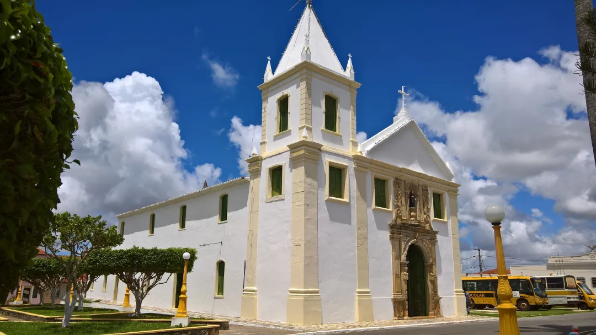

Riachuelo
História
Riachuelo fica a 29 quilômetros de Aracaju. Historiadores afirmam que as primeiras informações sobre o município dão conta que aquelas terras, em finais de 1590, eram ocupadas pela família dos Pinto. O centro das atenções era o engenho do português Mesquita Pinto. E é assim que a localidade começa a ser conhecida. Por causa das terras extremamente férteis, e dos rios Sergipe, Cotinguiba e Jacarecica, os Pinto se transformaram em grandes produtores de açúcar, algodão e gado.
O núcleo primitivo do atual Município de Riachuelo foi inicialmente pouso de tropeiros, no roteiro entre os centros açucareiros mais amigos, de Laranjeiras e Divina Pastôra. Com a vinda da família Pintos - cujos descendentes se estabeleceram em fazendas de criar ou em engenhos de açúcar, por toda região, tornando-se, de fato, seus senhores - teve início a aglomeração conhecida como 'Povoado dos Pintos', que foi elevado, em 1837, à categoria de freguesia (Nossa Senhora da Conceição do Riachuelo) e, em 1874, à de Vila e Município com a denominação de Riachuelo. Riachuelo foi até fins do século XIX, um dos centros mais importantes da Província, depois Estado de Sergipe, devido, sobretudo, à sua indústria açucareira.
Em 6 de maio de 1872, o Povoado Pintos, que atraía centenas de pessoas para a cultura da cana, é transformado em Freguesia de Nossa Senhora da Conceição do Riachuelo. Em 31 de março de 1874, com apenas dois anos de vida, a freguesia é transformada em Vila de Riachuelo e desmembrada do município de Laranjeiras. A nova vila vivia a grande fase da indústria açucareira. Seu poder econômico chegou a ser superior a Maruim e até mesmo a Laranjeiras, tendo no engenho e depois Usina Central de Riachuelo uma das mais importantes do Brasil. No dia 25 de janeiro de 1890, a vila de Riachuelo, com a implantação da República, passa a ser cidade. O período áureo de grande desenvolvimento de Riachuelo durou até as primeiras décadas deste século. Depois de Aracaju, com um porto mais franco e com todas as linhas de ferro chegando até lá, Maruim, Laranjeiras e Riachuelo passam a entrar em declínio. Um reflexo é o número da população. No censo de 1950, Riachuelo tinha 8 mil moradores e 50 anos depois a população era a mesma.
Observa-se, no município de Riachuelo, que apenas 20% da população vive no campo. A cultura predominante é a cana de açúcar com quase 90% da área agrícola, além da cultura da mandioca que é explorada pelos pequenos produtores, a qual possui expressiva importância social dentro do município.
fonte: https://fontesdahistoriadesergipe.blogspot.com/Pontos Turísticos
Capela do Engenho Nossa Senhora da Penha
Capela do Engenho Nossa Senhora da Penha é um igreja, localizada em Riachuelo. O estilo arquitetônico do local é barroco. A igreja foi designada um bem tombado pelo IPHAN e é listada como patrimônio de influência portuguesa. A grandiosidade da construção, da qual restou justamente a capela, "impressiona pela grandiosidade, característica pouco comum às capelas rurais remanescentes dos engenhos de açúcar no Nordeste do Brasil".
Dados Gerais de acordo com o IBGE
| Prefeito (a) | Peterson Dantas Araujo |
| Vice-Prefeito (a) | Helena Maria dos Santos |
| Site do município | https://riachuelo.se.gov.br/2021/home |
| Área territorial | 78 km² |
| População estimada | 10.116 pessoas |
| Densidade demográfica | 129,7 hab/km² |
| IDHM | 0,617 |
| PIB per capita | R$ 11.793,71 |